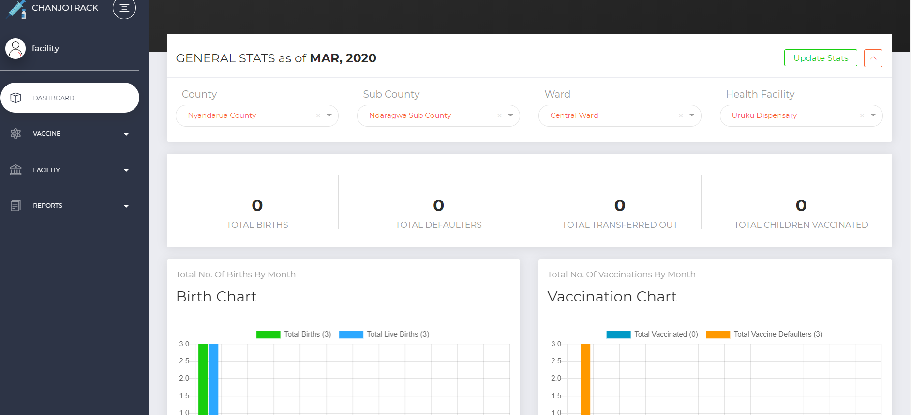
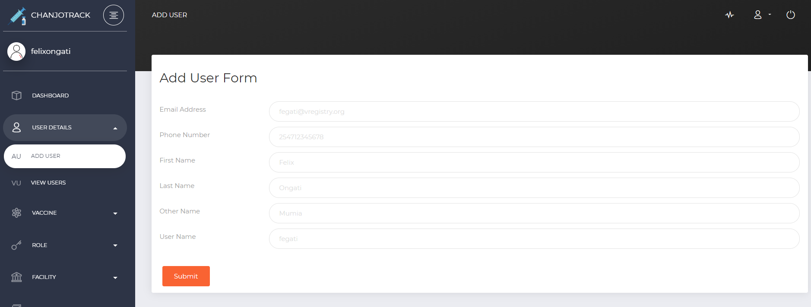
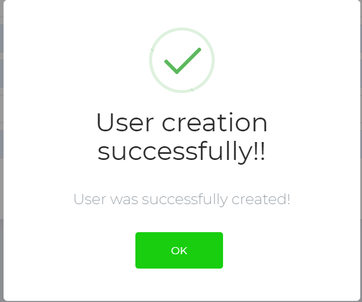
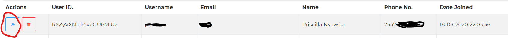
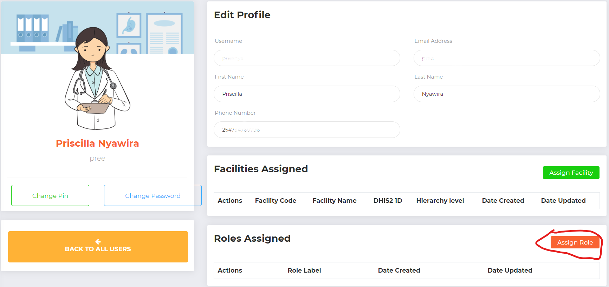
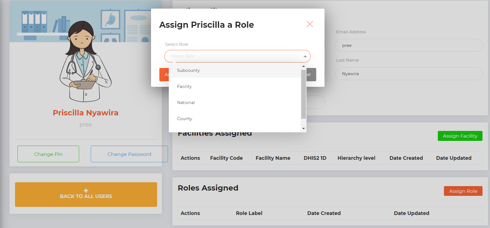
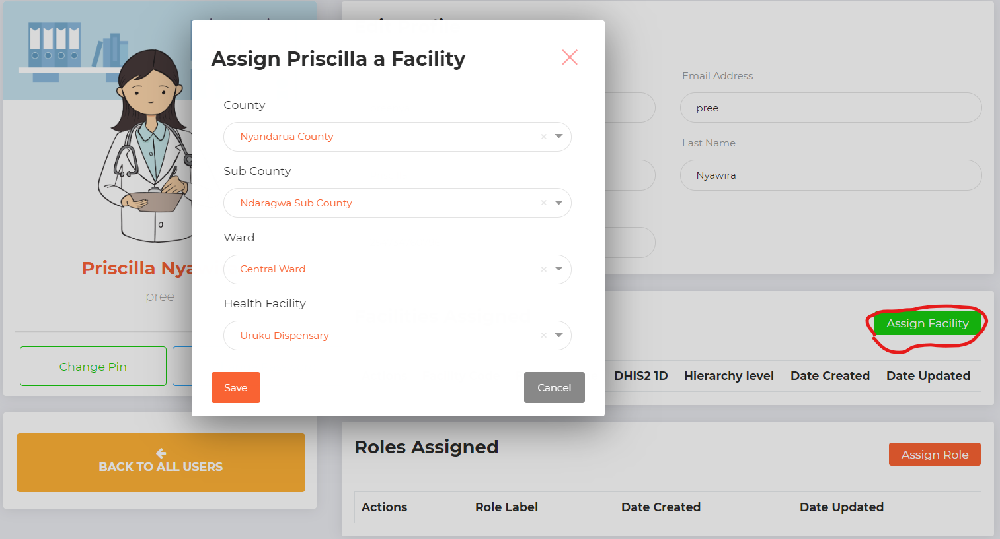

3. User Management¶
3.1. User Roles¶
The web based system implements role based access control; meaning different functionalities in the system are accessed based on privileges tied to your user account. There are four main user roles in the system;
Facility → Capture data, view/download reports limited to their facilities
Subcounty → Create/Update Facility Users, view/download reports limited to their sub counties and wards and facilities within their respective sub counties.
National → View reports at national level and able to drill down to counties, sub counties, wards and facilities
Admin → Can do everything legal
Image 4 below shows a dashboard for a Facility user role. Take note of the limited menu items;
Image 4: Facility Dashboard
3.2. Adding a New User¶
Accounts for new users can be created by clicking on the USER DETAILS menu item on the left bar menu and selecting ADD USER as shown on image 5 below;
Image 5: Add new user The user management module is not available for Facility roles. When adding a new user, it is important to take note of the following;
Email address should be correct since account credentials will be sent to the new user via the email provided.
Phone numbers should start with 254 without the + sign and should be unique. Same phone number cannot be used to register more than one account.
Conventionally, the username should be in the format firstname lastname combined, e.g. iannjeru for a user by the name Ian Njeru; all in small letters.
All users must be assigned a role and an organization unit.
Once all the details have been provided correctly, click on Submit to create the account, a success message will be displayed as on image 6 below;
Image 6: User Account Creation Successful
If an error is thrown, most probably you are using an already registered phone number.
3.3. Assigning Roles¶
Once the account has been created by the above process, the next step is to assign the new user an appropriate role. Creating a new user successfully will redirect you to a list of users. Most of the time, the newly created account will be the first on the list. Click on the Edit User icon (image 7) to assign a role to the new account (image 8).
Image 7: Edit User
Image 8: Assign Role Button
Image 8: Assign Role
3.4. Assigning Organization Unit¶
The procedure is similar to assigning roles as described above, except that you click on the Assign Facility button as below;
Image 10: Assign Facility
Note that when generating reports, users will be limited based on the organization unit they have been assigned. For facility users who capture data using USSD, only one facility should be assigned at a time.